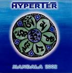

Home Artist links Label link

Hyperter - Mandala 2002
| Artist: | Hyperter |
| Title: | Mandala 2002 |
| Label: | Periferic Records |
| Length(s): | 60 minutes |
| Year(s) of release: | 2003 |
| Month of review: | [11/2003] |
Line up
Imre Tobias - lead guitar
Zoltan Szabo - rhythm guitar
Matyas Lukacs - bass
Balazs Majer - drums, percussion
Tracks
| 1) | Intro | 2.03
|
| 2) | Transsylvania Express | 5.49
|
| 3) | Scheherezade | 3.59
|
| 4) | Hyperspace | 4.31
|
| 5) | Infinity | 4.29
|
| 6) | Wake Up Shiva | 6.00
|
| 7) | Mistique Blue | 5.05
|
| 8) | Nell | 4.35
|
| 9) | Feelharmonic | 3.48
|
| 10) | Kaleidoscope | 11.40
|
| 11) | Following Rain | 7.42
|
| 12) | Outro | 0.43
|
Summary
The music
Hungarian band Hyperter (Hyperspace) makes instrumental progressive guitar rock. The guitar sound is somewhere between the wobbly guitar sound we heard in Geoff Mann's final years and a more spacy effect, sort of Ozric Tentacles. The other instruments, apart from an occasional bass solo, serve the guitar. This isn't bad in itself, but the downside is that the music is rather style attached. This results in the pieces sounding rather similar, flowing into eachother. When you further consider the limitations of instrumentation with double guitar, drums and bass, one might not be too surprised if the result is not exactly fit to keeps one's attention till the end. Even though most tracks contain some bite, it's too few and far between to entice.
Conclusion
In order to make up for the loss of voice, instrumental music needs something different. Hyperter was unable to make that difference, therefore creating an album that might sound nice for a couple of tracks, but can't keep the focus till the end.
© Roberto Lambooy